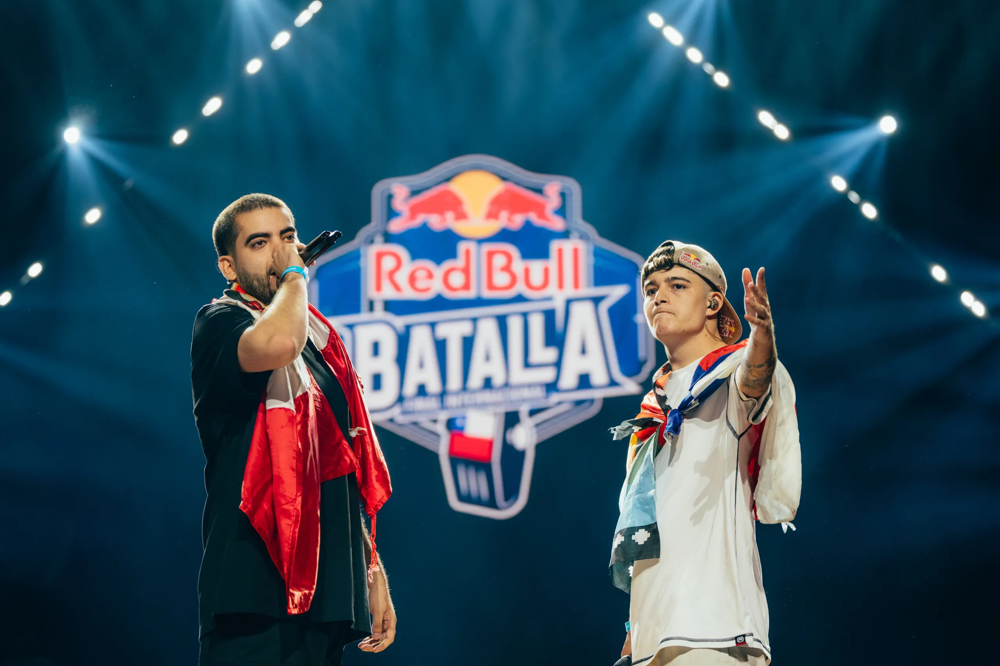
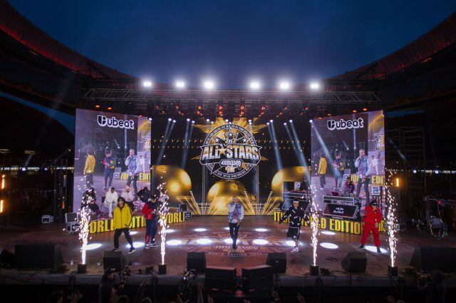
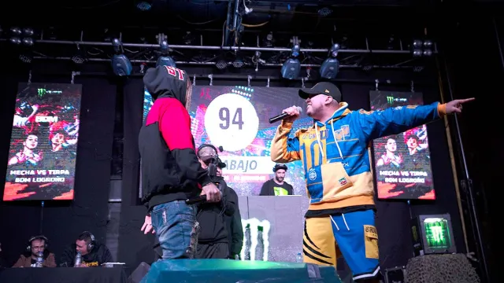
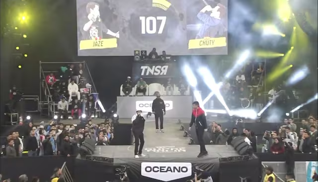

01 / 05
01 / 05FORMAT LLIGA
FMS
La Freestyle Master Series organitza enfrontaments entre MCs al llarg de diverses jornades amb una classificació.
Les batalles inclouen rondes i formats diferents. Els participants acumulen punts durant la temporada.
De les jornades de lliga a les finals internacionals. Cinc competicions, una mateixa passió.
El freestyle competitiu reuneix artistes de diferents països. Algunes competicions utilitzen lligues amb jornades i classificació; d'altres decideixen el campió mitjançant eliminatòries o formats per equips.
Passa el cursor per les targetes per revelar informació sobre cada format.
01 / 05La Freestyle Master Series organitza enfrontaments entre MCs al llarg de diverses jornades amb una classificació.
Les batalles inclouen rondes i formats diferents. Els participants acumulen punts durant la temporada.

02 / 05Una de les competicions de freestyle més conegudes, amb edicions nacionals i finals internacionals.
Els MCs avancen a través d'eliminatòries fins a disputar la final i decidir el campió.

03 / 05Una competició internacional que ha organitzat batalles individuals i en equip.
És coneguda pels formats de duples i trios, en què diversos MCs competeixen conjuntament.

04 / 05Batalla de Maestros és un circuit de competicions amb presència a diversos països.
Inclou esdeveniments nacionals i internacionals de diferents nivells, com BDM Deluxe.

05 / 05Un circuit de freestyle amb classificatòries i finals de caràcter internacional.
A través de competicions classificatòries, els MCs aconsegueixen arribar a les finals.
Aquest petit formulari forma part de la pràctica de classe. Comprova que dues contrasenyes coincideixin i tinguin un mínim de vuit caràcters.
És només una demostració: no crea cap compte ni desa informació. Utilitza valors inventats.